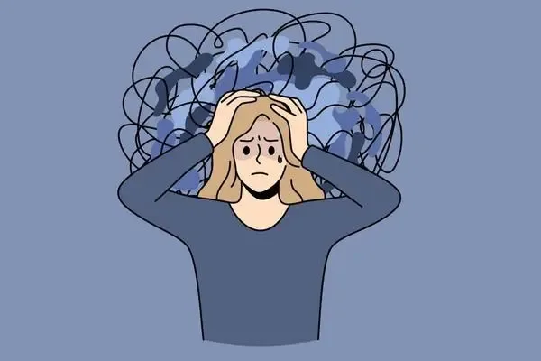

Stress- the most commonly used term in the lives of 20th century human- yet one of the most ignored facets of our lives.
Why? We ask. Because it is common. This deranged thinking of the commonality of this term has led us to experience its effects in the most horrendous forms. The way it manifests itself has the most disastrous effects on us. Depression, Anxiety, Burnout, High BP, Physical manifestations in the form of cancer or other chronic issues.
How do we- as an individual or a society respond to it? With the recent awareness wave in the masses, a positive change has been observed. Stress management- a yet common term, has been established but having positive effects on the psyche of people these days. Every single institution is initiating a conversation on it, destigmatizing its effects in a powerful manner.
As psychiatrists, practicing in the field for years on end, learning about the nuances of the field and coming across multiple individuals who have suffered the wrath of stress in their lives, we take it upon ourselves to share our bits of wisdom with our readers to empower them on this common yet extremely important issue. This blog is about how can this small term affect your lives in big manner- and how you are capable enough to seek help with us.
How do I identify I have stress?
There can be many triggers – or terminologically stressors- that can trigger a response that generate stress in the body and mind. It is usually the presentation of a big change or situation in life that is not encountered before or not being managed properly. Even a small stressor can affect the well being
in many extreme ways. There are different manifestations of stress in every individual, but some small pointers can be easily observed and marked to see and identify if you have stress. These include-
- High Blood pressure
- Chest pain
- Inability to eat or overeating
- Anxiety and panic
- Loss of interest in social activities
- Fatigue and insomnia
- Excessive usage of addictive substances to handle issues
- Irritability and low mood
If these common signs are showing up and you have managed to identify a few of them, you can know- the stress hormone is at its peak!

What happens when I manage my stress poorly?
Turning to unhealthy behaviors to justify their actions is not uncommon in human beings. This lack of responsibility shifts us into a spiral that has only one way out- acceptance. But first, let’s discuss some of the ways that we as some of the best psychiatrist in Delhi have seen people adopt to manage their stress that landed them in a poor life condition.
- Alcohol & drug abuse
- Overeating or developing eating disorders
- Smoking
- Violent maladaptive behaviors
How to cope and induce stress management?
There are a lot of ways to cope with stress and get rid of maladaptive behaviors that we call “stress management” It is quite easy to fall in the trap of substance abuse and confuse it for a way of handling stress, but it can be your willpower in this situation to recognize the right ways and come out of the current situation for the better.
Relaxation Techniques
Relaxing your mind and body is the ultimate way to manage your stress. Controlling your bodily responses is necessary to know how you operate and what will suit you in case you encounter a situation that is stressful. Here are basic techniques to facilitate relaxation-
- Mindfulness based cognitive therapy (MBCT) and Mindfulness based stress reduction (MBSR) can be highly effective therapies to pursue when you are seeking help from an expert like Dr. Gorav Gupta. Proving its mettle in the cases of high stress, depression and cancer care, it is one of the best stress reduction techniques in the clinical setting.
- Deep Breathing- Deep breathing is one of the best yogic and relaxation techniques that involves minimal effort and can be practiced by anyone at any point of time. It has multiple benefits that provide an overall upliftment of the whole bodily system.
- Progressive muscle relaxation- This involves voice guidance for the clients to tense and relax different muscle groups to promote relaxation on an overall level.
Physical Activities
The lack of proper physical activities is one of the main reasons that stored stress in the body is not released, leading to its accumulation. Regular exercise can help increase heart rate and dissipate stored muscle tension. The release of endorphins is also a crucial aspect to promote a higher physical activity for the people today.
Diet & Nutrition
The kind of diet that is available today has drastic impacts on our body, not only on a physical level but also at a mental plane. We are what we eat, and we should be aware of every single thing we put in our bodies. Our diets should be purely intentional and controlled, catering to our needs and have healthy proportions of every nutrient that is available.
Coping Mechanisms
Every individual is different, and we all have a way of coping. However it may be, we are fundamentally different as humans in our ways of grieving and coping with a situation. The solutions can be found in either problem focused coping, where we are inclined towards focusing on the practicalities and the situation, while in emotion focused coping, the focus is solely upon the emotions that arise as a result of the situation.
How can I get help to manage stress?
It is not everyone’s cup of tea to pursue an answer on their own. It is truly a dilemma sometimes to find ways to regulate your stress management journey, and it is truly easier with an expert by your side to guide you on this journey. Problems when shared become a great source of strength for us and we eventually find our path that guides us out of the deep shadow of looming stress in our lives. With experts like Dr. Gorav Gupta, who is one of the best psychiatrists in Delhi, you can find your way out and start afresh on finding the right ways to live and create your own healthy ecosystem around you.